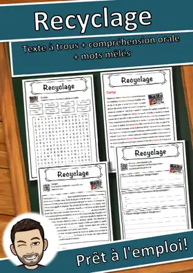
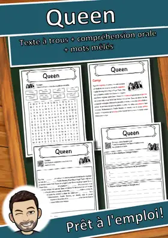
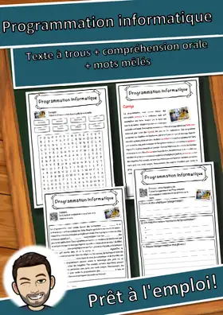
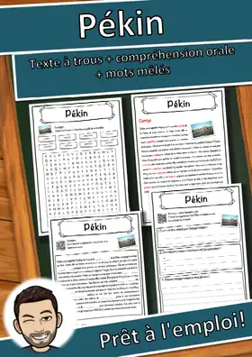
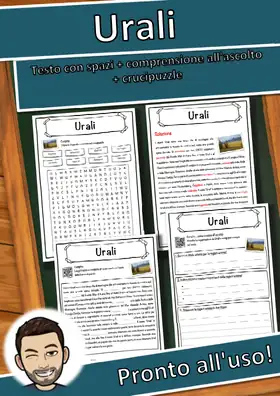
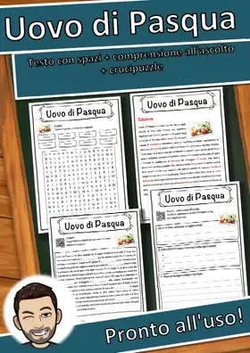
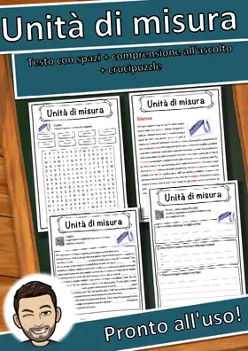
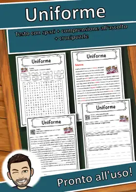

Other languages
This page only shows resources in English. Here you'll find my materials in Spanish, French, Italian and German.
DE
Deutsch
More than 6,500 German teaching materials with answer keys – available on eduki.
Go to the Deutsch page →ES
Español
Spanish reading passages, cloze worksheets and reading trails – available on TpT. · 2,166 resources
Go to the Español page →


FR
Français
French cloze worksheets with listening task and word search – available on eduki. · 3,535 resources
Go to the Français page →
Recyclage – Fiche : texte à trous, compréhension orale et mots mêlés

Queen – Fiche : texte à trous, compréhension orale et mots mêlés

Programmation informatique – Fiche : texte à trous, compréhension orale et mots mêlés

Pékin – Fiche : texte à trous, compréhension orale et mots mêlés
IT
Italiano
Italian cloze worksheets with listening task and word search – available on eduki. · 2,146 resources
Go to the Italiano page →
Urali – Scheda: testo con spazi vuoti, comprensione all'ascolto e crucipuzzle

Uovo di Pasqua – Scheda: testo con spazi vuoti, comprensione all'ascolto e crucipuzzle

Unità di misura – Scheda: testo con spazi vuoti, comprensione all'ascolto e crucipuzzle
